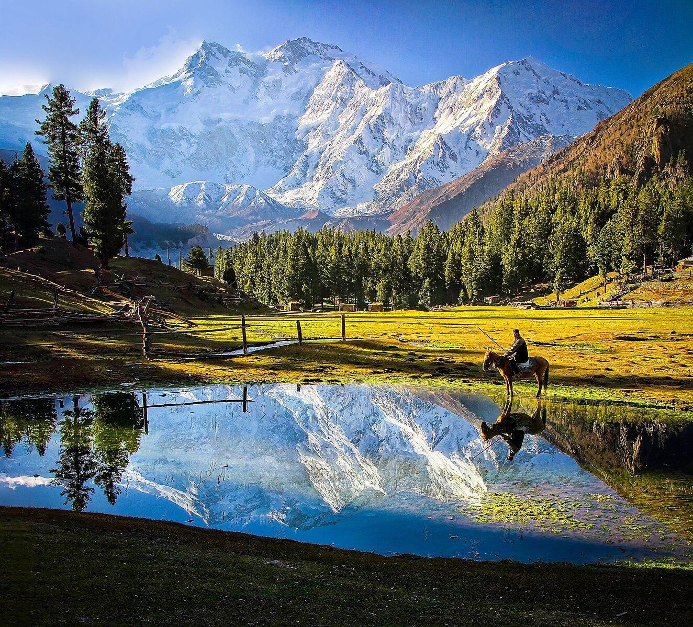

My Trek to Fairy Meadows
The jeep ride was just the beginning of an adventure that led to one of the most magical places on Earth. Waking up to the sight of Nanga Parbat was a spiritual experience...
Read Full Story
The jeep ride was just the beginning of an adventure that led to one of the most magical places on Earth. Waking up to the sight of Nanga Parbat was a spiritual experience...
Read Full Story
Beyond the stunning landscapes, it was the people of Hunza who truly captured my heart. Their warmth, resilience, and the taste of freshly picked apricots are memories I'll cherish forever...
Read Full Story